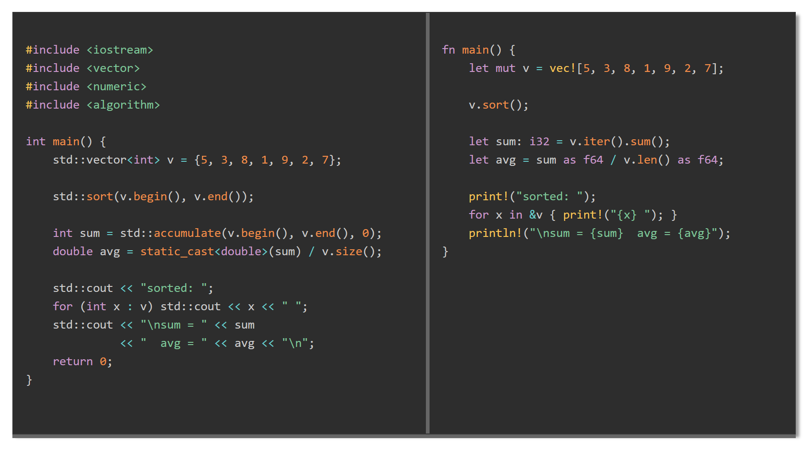

<view-splitter-bar>) that displays two adjacent panels
separated by a draggable vertical splitter bar and a draggable horizontal resizer along the bottom
edge. Dragging the splitter redistributes width between panels without changing total component
width. Dragging the resizer changes the height of both panels together. Clicking either panel
shifts the split by one step.
ViewSplitterBarComponent/
js/ViewSplitterBar.js component definition
css/ViewSplitterBar.css host-page placement helpers
ViewSplitterBarComponent.html demo / test page
SpecSplitterBarComponent.md design specification<link rel="stylesheet" href="../css/prism.css">
<link rel="stylesheet" href="css/ViewSplitterBar.css">
<script src="../js/prism.js" defer></script>
<script src="js/ViewSplitterBar.js" defer></script>--light and --dark CSS custom properties:
:root {
--light: #f0f0f0;
--dark: #333;
}
Plain text<view-splitter-bar width="60rem" height="16rem" left-ratio="0.5">
<pre slot="left">Left panel content.</pre>
<pre slot="right">Right panel content.</pre>
</view-splitter-bar><pre><code class="language-..."> in each named slot:
<view-splitter-bar width="70rem" height="20rem" highlight="prism">
<pre slot="left"><code class="language-cpp">
int main() { return 0; }
</code></pre>
<pre slot="right"><code class="language-rust">
fn main() {}
</code></pre>
</view-splitter-bar>| Attribute | Default | Description |
|---|---|---|
width | auto | Total component width (px or rem) |
height | auto | Initial panel height (px or rem); draggable after render |
left-ratio | 0.5 | Initial fraction of total width given to the left panel |
bar-width | 6px | Width of the vertical splitter and height of the bottom resizer |
bar-color | #888 | Color of both the splitter and the resizer |
bg-color | var(--light) | Background of both panels |
color | var(--dark) | Text color of both panels |
overflow-x | auto | Horizontal overflow: auto, scroll, or hidden |
code-padding | 0.75rem 1rem | Padding inside each panel |
highlight | (none) | Set to prism to enable Prism.js syntax highlighting |
step-px | 40 | Pixels transferred per panel click |
min-panel-px | 120 | Minimum width in pixels for either panel |
min-height-px | 80 | Minimum container height in pixels when dragging the resizer |
step-px pixels from right to left.step-px pixels from left to right.font-size cascades through the shadow DOM boundary; set it on the element directly.
height is managed as an explicit pixel value on the inner container. Use the
height attribute to set an initial value; after the first resizer drag the
attribute is no longer consulted.